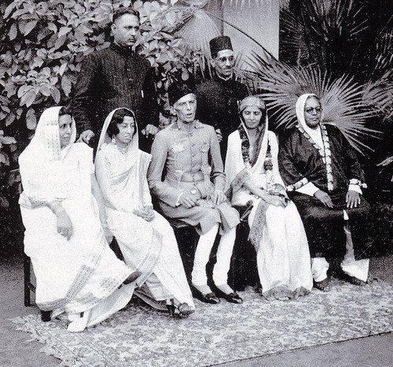

MuhammadAli Jinnah

Muhammad Ali Jinnah Gujarati born Mahomedali Jinnahbhai; 25 December 1876 – 11 September 1948) was a barrister, politician and the founder of Pakistan.[1] Jinnah served as the leader of the All-India Muslim League from 1913 until the inception of Pakistan on 14 August 1947, and then as the Dominion of Pakistan's first governor-general until his death. He is revered in Pakistan as the Quaid-i-Azam ("Great Leader") and Baba-i-Qaum ("Father of the Nation"). His birthday is observed as a national holiday in Pakistan.
Born at Wazir Mansion in Karachi, Jinnah was trained as a barrister at Lincoln's Inn in London, England. Upon his return to India, he enrolled at the Bombay High Court, and took an interest in national politics, which eventually replaced his legal practice. Jinnah rose to prominence in the Indian National Congress in the first two decades of the 20th century. In these early years of his political career, Jinnah advocated Hindu–Muslim unity, helping to shape the 1916 Lucknow Pact between the Congress and the All-India Muslim League, in which Jinnah had also become prominent. Jinnah became a key leader in the All-India Home Rule League, and proposed a fourteen-point constitutional reform plan to safeguard the political rights of Muslims in the Indian subcontinent. In 1920, however, Jinnah resigned from the Congress when it agreed to follow a campaign of satyagraha, which he regarded as political anarchy.
By 1940, Jinnah had come to believe that the Muslims of the subcontinent should have their own state to avoid the possible marginalised status they may gain in an independent Hindu–Muslim state. In that year, the Muslim League, led by Jinnah, passed the Lahore Resolution, demanding a separate nation for Indian Muslims. During the Second World War, the League gained strength while leaders of the Congress were imprisoned, and in the provincial elections held shortly after the war, it won most of the seats reserved for Muslims. Ultimately, the Congress and the Muslim League could not reach a power-sharing formula that would allow the entirety of British India to be united as a single state following independence, leading all parties to agree instead to the independence of a predominantly Hindu India, and for a Muslim-majority state of Pakistan
for more
FAMILY AND CHILDHOOD

Jinnah's given name at birth was Mahomedali Jinnahbhai,[a] and he likely was born in 1876,[b] to Jinnahbhai Poonja and his wife Mithibai, in a rented apartment on the second floor of Wazir Mansion near Karachi,[2] now in Sindh, Pakistan but then within the Bombay Presidency of British India. Jinnah's paternal grandfather was from Paneli Moti village in Gondal state in Kathiawar peninsula (now in Gujarat, India).[3] He was of a Gujarati Khoja Nizari Isma'ili Shi’a Muslim background, though Jinnah later followed the Twelver Shi'a teachings.[4][5][6][7] After his death, his relatives and other witnesses claimed that he had converted in later life to the Sunni sect of Islam. His sectarian affiliation at the time of his death was disputed in multiple court cases.[8] Jinnah was from a wealthy merchant background. His father was a merchant and was born to a family of textile weavers in the village of Paneli in the princely state of Gondal (Kathiawar, Gujarat); his mother was also of that village. They had moved to Karachi in 1875, having married before their departure. Karachi was then enjoying an economic boom: the opening of the Suez Canal in 1869 meant it was 200 nautical miles closer to Europe for shipping than Bombay.[9][10] Jinnah was the second child;[11][12] he had three brothers and three sisters, including his younger sister Fatima Jinnah. The parents were native Gujarati speakers, and the children also came to speak Kutchi and English.[13] Jinnah was not fluent in Gujarati, his mother-tongue, nor in Urdu; he was more fluent in English.[14][15][16] Except for Fatima, little is known of his siblings, where they settled or if they met with their brother as he advanced in his legal and political careers.[17]
for more
EDUCATION AND ENGLAND
n 1892, Sir Frederick Leigh Croft, a business associate of Jinnahbhai Poonja, offered young Jinnah a London apprenticeship with his firm, Graham's Shipping and Trading Company.[22] He accepted the position despite the opposition of his mother, who before he left, had him enter an arranged marriage with his cousin, two years his junior from the ancestral village of Paneli, Emibai Jinnah. Jinnah's mother and first wife both died during his absence in England.[23] Although the apprenticeship in London was considered a great opportunity for Jinnah, one reason for sending him overseas was a legal proceeding against his father, which placed the family's property at risk of being sequestered by the court. In 1893, the Jinnahbhai family moved to Bombay.[18]
Soon after his arrival in London, Jinnah gave up the business apprenticeship in order to study law, enraging his father, who had, before his departure, given him enough money to live for three years. The aspiring barrister joined Lincoln's Inn, later stating that the reason he chose Lincoln's over the other Inns of Court was that over the main entrance to Lincoln's Inn were the names of the world's great lawgivers, including Muhammad. Jinnah's biographer Stanley Wolpert notes that there is no such inscription, but inside (covering the wall at one end of New Hall, also called the Great Hall, which is where students, Bar and Bench lunch and dine)[24] is a mural showing Muhammad and other lawgivers, and speculates that Jinnah may have edited the story in his own mind to avoid mentioning a pictorial depiction which would be offensive to many Muslims.[25] Jinnah's legal education followed the pupillage (legal apprenticeship) system, which had been in force there for centuries. To gain knowledge of the law, he followed an established barrister and learned from what he did, as well as from studying lawbooks.[26] During this period, he shortened his name to Muhammad Ali Jinnah.[27]
During his student years in England, Jinnah was influenced by 19th-century British liberalism, like many other future Indian independence leaders. His main intellectual references were peoples like Bentham, Mill, Spencer, and Comte.[28][29] This political education included exposure to the idea of the democratic nation, and progressive politics.[30] He became an admirer of the Parsi British Indian political leaders Dadabhai Naoroji and Sir Pherozeshah Mehta. Naoroji had become the first British Member of Parliament of Indian extraction shortly before Jinnah's arrival, triumphing with a majority of three votes in Finsbury Central. Jinnah listened to Naoroji's maiden speech in the House of Commons from the visitor's gallery.[31][32]
BARRISTER
n 1892, Sir Frederick Leigh Croft, a business associate of Jinnahbhai Poonja, offered young Jinnah a London apprenticeship with his firm, Graham's Shipping and Trading Company.[22] He accepted the position despite the opposition of his mother, who before he left, had him enter an arranged marriage with his cousin, two years his junior from the ancestral village of Paneli, Emibai Jinnah. Jinnah's mother and first wife both died during his absence in England.[23] Although the apprenticeship in London was considered a great opportunity for Jinnah, one reason for sending him overseas was a legal proceeding against his father, which placed the family's property at risk of being sequestered by the court. In 1893, the Jinnahbhai family moved to Bombay.[18]
Soon after his arrival in London, Jinnah gave up the business apprenticeship in order to study law, enraging his father, who had, before his departure, given him enough money to live for three years. The aspiring barrister joined Lincoln's Inn, later stating that the reason he chose Lincoln's over the other Inns of Court was that over the main entrance to Lincoln's Inn were the names of the world's great lawgivers, including Muhammad. Jinnah's biographer Stanley Wolpert notes that there is no such inscription, but inside (covering the wall at one end of New Hall, also called the Great Hall, which is where students, Bar and Bench lunch and dine)[24] is a mural showing Muhammad and other lawgivers, and speculates that Jinnah may have edited the story in his own mind to avoid mentioning a pictorial depiction which would be offensive to many Muslims.[25] Jinnah's legal education followed the pupillage (legal apprenticeship) system, which had been in force there for centuries. To gain knowledge of the law, he followed an established barrister and learned from what he did, as well as from studying lawbooks.[26] During this period, he shortened his name to Muhammad Ali Jinnah.[27]
During his student years in England, Jinnah was influenced by 19th-century British liberalism, like many other future Indian independence leaders. His main intellectual references were peoples like Bentham, Mill, Spencer, and Comte.[28][29] This political education included exposure to the idea of the democratic nation, and progressive politics.[30] He became an admirer of the Parsi British Indian political leaders Dadabhai Naoroji and Sir Pherozeshah Mehta. Naoroji had become the first British Member of Parliament of Indian extraction shortly before Jinnah's arrival, triumphing with a majority of three votes in Finsbury Central. Jinnah listened to Naoroji's maiden speech in the House of Commons from the visitor's gallery.[31][32]
next